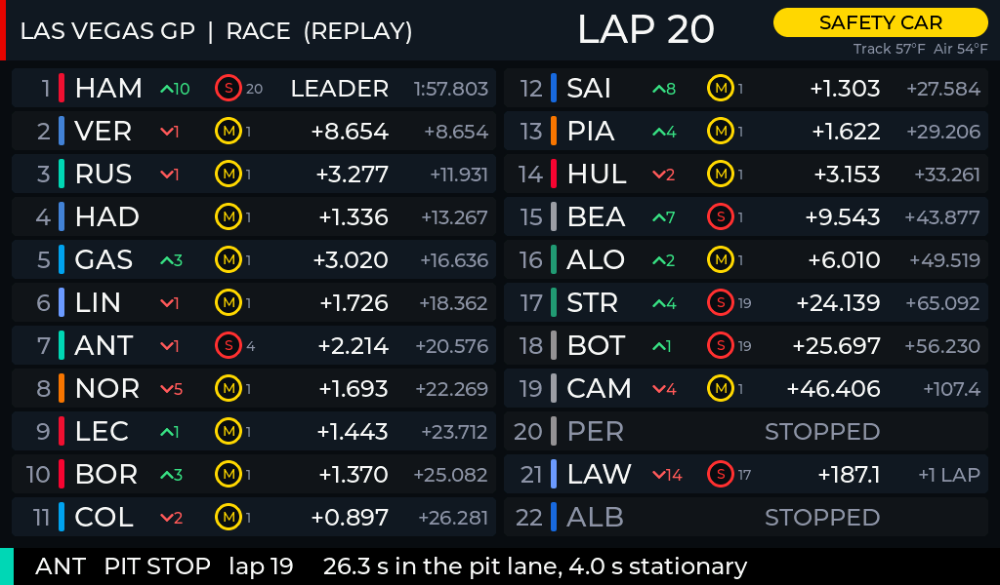
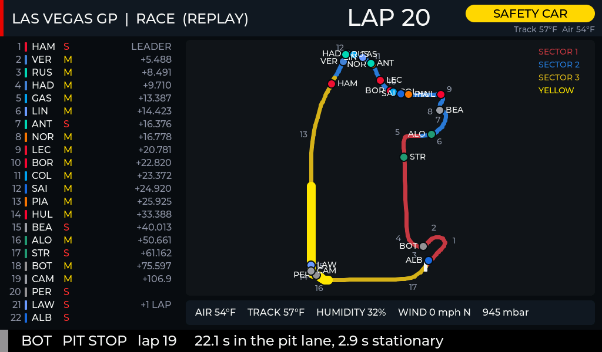
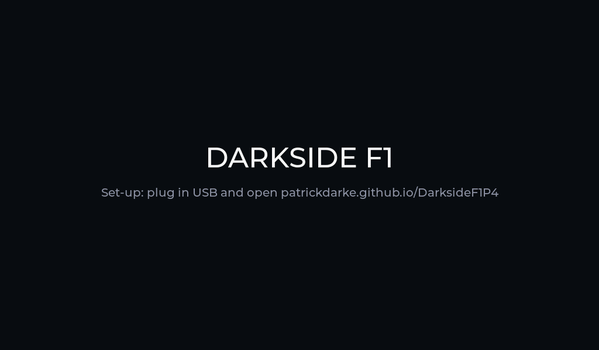

Darkside F1 P4
Live Formula 1 timing on an Elecrow CrowPanel Advanced 10.1" ESP32-P4. Install it from this page: no tools, no compiling.


This page needs Chrome or Edge on a computer: it talks to the panel over USB, which other browsers and phones cannot do.
1 Install the firmware
- Plug the panel into this computer with a USB-C data cable.
- Press Install and pick the port named USB Serial (a CH340 adapter).
- It takes about two minutes. Say yes to erasing the device on a first install.
Only for the CrowPanel Advanced 10.1" ESP32-P4. When it is done, close the installer's window: the panel restarts and asks to be set up, like this.

2 Set it up
The firmware comes with no Wi-Fi name and no passwords in it. Give the panel yours here: they go down the USB cable and are kept on the panel. Nothing you type is sent anywhere else; this page has no server behind it.
Not connected.
What the panel says
3 Use it
- Between sessions it shows the countdown to the next one; tap for standings, the last result and the circuit.
- Fifteen minutes before a session it goes live on its own. The tabs along the bottom pick the timing tower, track map, sectors, tyres or one car.
- To change anything later, plug it in and come back to step 2. Installing a newer version without erasing keeps your settings.
Source, build instructions and the full description: github.com/patrickdarke/DarksideF1P4.